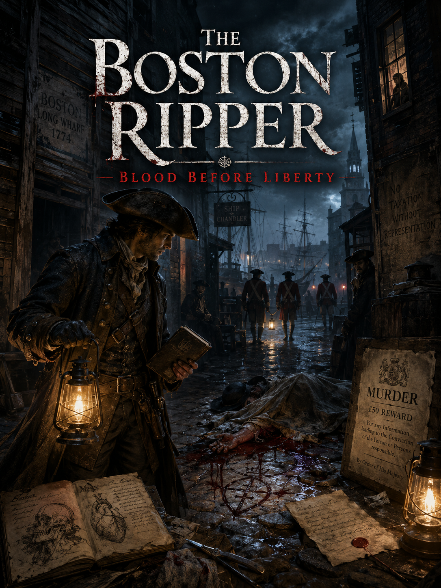
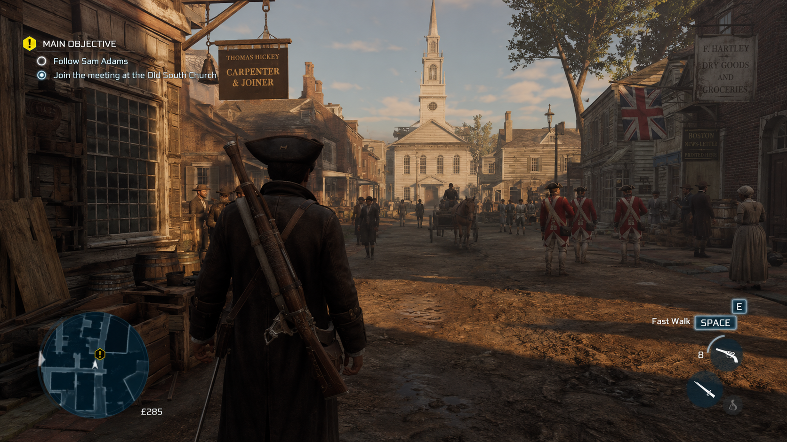

Examine the Evidence
Study wounds, fibers, blood patterns, letters, footprints, shipping records, personal items, and objects left deliberately at crime scenes.
A Haunted Echoes Studios Concept
A historical murder-mystery horror game set during the final months before the American Revolution.
While colonists and British authorities prepare for conflict, bodies begin appearing near Boston’s docks. Each crime is committed with surgical precision, and someone is using the city’s political unrest to conceal a campaign of terror.

Project Overview
The Boston Ripper combines open-city exploration, crime-scene investigation, suspect surveillance, dialogue, stealth, historical tension, and grounded survival horror.
Study wounds, fibers, blood patterns, letters, footprints, shipping records, personal items, and objects left deliberately at crime scenes.
Follow suspects through taverns, churches, military posts, political meetings, homes, warehouses, and secret gatherings.
Present a theory before the killer strikes again, knowing that a false accusation may destroy an innocent life and strengthen the real murderer.
Gameplay Concept
Suspects, soldiers, civilians, merchants, informants, and revolutionary figures continue their routines while the player follows leads.

The Premise
The city is filled with soldiers, smugglers, revolutionaries, loyalists, informants, merchants, dockworkers, and frightened civilians.
British officials accuse colonial radicals of using murder to create panic. The Sons of Liberty claim the Army is eliminating witnesses and political opponents. Newspapers publish rumors before evidence can be verified.
Is the killer a surgeon, spy, merchant, soldier, criminal, or revolutionary?
Are the victims connected through politics, smuggling, medicine, intelligence work, or something more personal?
Is one murderer responsible—or are several people copying the same methods to conceal unrelated crimes?
The answer changes between playthroughs as the killer identity, victim order, evidence, and suspect relationships are partially randomized.
Player Background
The selected background changes dialogue choices, evidence interpretation, access routes, trusted contacts, and possible solutions.
Gains stronger interrogation, arrest, patrol, and official-record options.
Has legal authority but may be distrusted by colonial groups and pressured by British officials.
Understands wounds, poisons, anatomy, surgical tools, and primitive autopsy evidence.
Medical knowledge reveals clues other investigators may overlook or misinterpret.
Accesses political rumors, anonymous letters, newspaper sources, coded publications, and revolutionary networks.
Publishing evidence may expose the truth—or warn the killer that the investigation is closing in.
Knows harbor routes, tunnels, criminal contacts, hidden warehouses, false manifests, and illegal passageways.
Can enter places others cannot but risks arrest and betrayal by former associates.
Investigation Loop
Evidence remains uncertain, incomplete, and open to interpretation.
The journal records observations but does not label clues as correct or incorrect. Players manually determine which connections are meaningful.
Search before evidence is moved, stolen, contaminated, destroyed, or claimed by political authorities.
Study injuries, clothing, possessions, blood, possible poisons, and signs of medical knowledge.
Compare testimony, confront contradictions, protect informants, or reveal evidence to provoke a reaction.
Observe routines, intercept letters, enter restricted buildings, and determine who is lying about their movements.
Connect victims, suspects, locations, political groups, shipping routes, and medical evidence on the investigation board.
Investigation Locations
The investigation moves through historically inspired areas of Boston. Each location contains different witnesses, patrol patterns, political factions, records, and possible routes used by the killer.
Passenger ships, warehouses, boarding houses, smugglers, customs officers, sailors, cargo records, and narrow alleys near the docks.
Smuggling NetworkThe narrow land connection between Boston and the mainland is heavily controlled by British troops, checkpoints, earthworks, and patrols watching everyone who enters or leaves the town.
British CheckpointsA crowded residential and commercial neighborhood surrounding Copp's Hill, filled with workshops, taverns, family homes, merchants, churches, and revolutionary connections.
Revolutionary ContactsA prominent rise on the southern side of the peninsula overlooking nearby streets, homes, defensive positions, harbor activity, and routes toward the waterfront.
Military ObservationThe highest section of Boston's original hills provides a landmark above the town, with isolated paths, elevated viewpoints, private property, and places where secret meetings may go unnoticed.
Hidden MeetingsA public pasture and militia training ground used by townspeople and soldiers. During the day it is crowded; after dark its open ground and surrounding paths become dangerous.
Militia ActivityThe murder investigation occurs alongside escalating conflict between colonists and British authorities.
Soldiers increase patrols. Political groups accuse one another. Crowds gather around suspects before evidence is examined.
Changing Killer Identity
A military physician conducting unauthorized experiments and eliminating anyone who discovers his work.
A trusted local physician hiding a violent obsession beneath professional respectability.
A British or colonial agent murdering witnesses who discovered an intelligence network.
A powerful trader using the murders to provoke unrest, destroy rivals, or manipulate control of the harbor.
Several people adopt the same methods, causing unrelated murders to appear connected.
An organized group uses ritualized killings to spread fear, eliminate targets, and influence the approaching revolution.
Day and Night Structure
Historical Backdrop
The murders are fictional, but the political and social environment draws from the final period before Lexington and Concord.
Horror Direction
Most horror comes from human violence, primitive medicine, political panic, candlelit streets, and the inability to know whether the correct suspect has been identified.
A shadowy figure may appear in impossible places. Locked buildings may be entered without visible damage. Familiar voices may call from dark alleys. The game does not immediately confirm whether these events are supernatural, staged, or caused by the investigator’s trauma.
Possible Outcomes
The player cannot save every possible victim or preserve every clue. Following one suspect may allow the killer to act elsewhere.
The correct suspect is arrested with enough evidence to survive political interference and public doubt.
The murderer escapes aboard a ship. Years later, evidence suggests the same methods have appeared in London.
A false accusation leads to imprisonment, execution, or mob violence while the real killer remains free.
The investigation triggers a confrontation between British soldiers and colonial groups.
The player protects a political faction, powerful family, or intelligence network by concealing the murderer’s identity.
Evidence suggests the Boston murders created an identity later adopted by several killers, including one in London in 1888.
The project is currently in concept development. Story details, characters, gameplay systems, and the final title may evolve during pre-production.
An early prototype would focus on one crime scene, evidence examination, a suspect interview, the investigation board, and nighttime surveillance.
Development requires research into colonial Boston geography, medicine, law enforcement, clothing, politics, shipping, architecture, and daily life.
Haunted Echoes Studios
Haunted Echoes Studios develops original interactive projects involving folklore, historical mysteries, psychological horror, investigation, simulation, and meaningful player choices.
The Boston Ripper creates tension through uncertain evidence, human motives, political pressure, and the possibility that the wrong conclusion may be more dangerous than the killer.
Visit Haunted Echoes Studios View the Arizona Project